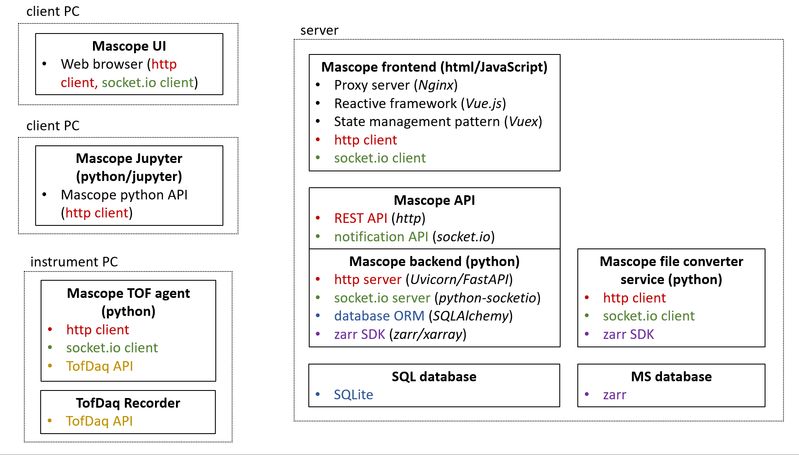

Contents:
init_db()
test_database_connection()
startup_event()
subscribe()
unsubscribe()
run()
get_exact_isotope_mzs()
get_exact_mz()
match_mz()
H5Pool
RawPool
SamplePool
filename_to_zarr_path()
get_base_path()
get_file_data_vars()
get_zarr_var_shape()
load_array()
load_coord()
load_file()
open_mfzarr()
open_zarr()
read_zarr_attributes()
update_props()
update_zarr_array_coord()
write_props()
write_zarr_attributes()
zarr_sdk
smooth()
ImageGenerator
convert_base64_to_img()
convert_to_base64()
gen_heatmap_image()
gen_ridge_traces()
gen_spec_image()
gen_spec_stack_image()
gen_timeseries_trace()
hstack_imgs()
read_img_from_h5()
stack_spec_images()
write_img_to_h5()
Logger
parent_func_name()
t_mark()
this_func_name()
calculate_peak_area()
calculate_tic()
detect_peaks()
filter_peaks()
fit_n_peaks()
fit_peaks()
fwhm_to_sigma()
gen_gaussian_peakshape()
gen_peak()
gen_peak_kernel()
get_peaks()
peak_kernel_residual()
AttrDict
CacheQ
ExtendableDataArray
FSWatcher
IncrementalCOO
LRUDict
QConnect
QueueSubscription
SubscriptableQueue
copy_dict()
ct_struct_to_dict()
filetime2datetime()
generate_unique_key()
get_client_notification_context()
map_keys()
map_to_camel_case()
map_to_snake_case()
parse_cmd_args()
parse_path_from_item_filename()
recursive_walk()
timestamp_from_filename()
to_camel_case()
to_snake_case()
create_sample_file_db_record()
main()
process_stream()
RotationLogger
line_prefix()
Index
Module Index
Search Page
{kind=link}